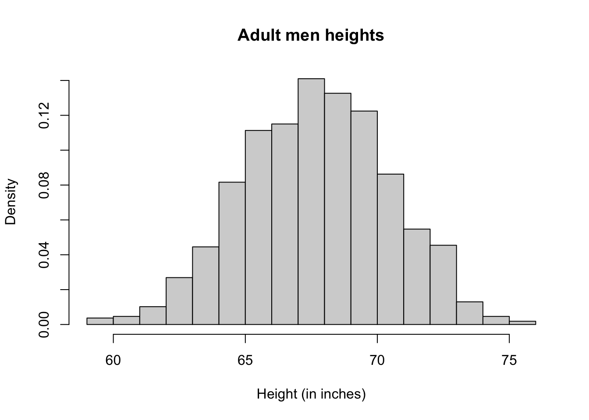

data(father.son, package="UsingR")
x <- father.son$fheightProbability
The concept of probability is important in almost every field of science, including biology. Probability is the foundation of statistical inference. The concept of probability rests on the notion of a random experiment that has two or more possible outcomes whose occurrence annot be predicted with certainty.
For example, consider the experiment of rolling a pair of dice. The set of possible outcomes (sample space) is (1,1),(1,2),…,(6.6). An event is a subset of the sample space.
Example 1: The event is \(E_{1}=(1,1)\).
Example 2: The event is \(E_{2}=\)“The sum of the two rolls is 5”
The probability of an event is the proportion of all random experiments in which the specified event occurs when the same experiment is repeated independently over and over again. In the long run, that is, if an infinite number of experiments is carried out, the probability of an event is the fraction of experiments in which the event occurs. Probability ranges between 0 an 1.
A useful tool for thinking about probabilities of events is with a Venn diagram. The area of the diagram represents all possible outcomes of an experiment, and we can represent various events as areas within the diagram.
Two events are mutually exclusive if both events cannot occur simultaneously. For example \(E_{1}\) and \(E_{2}\) defined above are mutually exclusive and \[ P(E_{1} \text{ and } E_{2})=0\]
Probability distribution
A simple way to think about a probability distribution is as a compact description of many numbers. For example, imagine that all the heights of men in a population have been measured, and you want to describe or explain those measures to someone else. Suppose all these measures are contained in the following dataset:
One way to describe this information is to list all elements in the dataset, or to show a random sample of 10 elements from the list of 1,078 total measures.
length(x)[1] 1078sample(x,10) [1] 61.68183 71.44164 64.44602 64.62347 71.07217 67.41537 69.90248 68.33241
[9] 66.09529 66.43717Another, more compact and descriptive way to represent the data is by using a histogram. Histograms show the proportion of values within intervals, \((a, b)\). In the previous example, plotting the heights as bars is more illustrative because we are usually more interested in intervals, such as the percentage of people whose heights fall between 70 and 71 inches. Histograms are also useful for describing different families of distributions. Here is the histogram of the height data:
hist(x, xlab="Height (in inches)", main="Adult men heights",freq=TRUE)With this plot, we can describe the number of observations within any given interval. For example, there are over 70 individuals taller than 6 feet (72 inches).
We can also convert those numbers into probability
y<-hist(x, xlab="Height (in inches)", main="Adult men heights",freq=FALSE)
y$breaks
[1] 59 60 61 62 63 64 65 66 67 68 69 70 71 72 73 74 75 76
$counts
[1] 4 5 11 29 48 88 120 124 152 143 132 93 59 49 14 5 2
$density
[1] 0.003710575 0.004638219 0.010204082 0.026901670 0.044526902 0.081632653
[7] 0.111317254 0.115027829 0.141001855 0.132653061 0.122448980 0.086270872
[13] 0.054730983 0.045454545 0.012987013 0.004638219 0.001855288
$mids
[1] 59.5 60.5 61.5 62.5 63.5 64.5 65.5 66.5 67.5 68.5 69.5 70.5 71.5 72.5 73.5
[16] 74.5 75.5
$xname
[1] "x"
$equidist
[1] TRUE
attr(,"class")
[1] "histogram"sum(y$density)[1] 1Summarizing a list of numbers is a powerful way to describe the distribution or, more importantly, the possible outcomes of a random experiment. We may not know all possible outcomes, so instead of describing proportions, we describe probabilities. For instance, the probability of picking a random height within the interval \((a,b)\) is denoted with \(Pr(a \leq X \leq b)\).
In summary, a probability distribution describes the probabilities of each of the possible outcomes of a random experiment. Some probability distributions can be described mathematically, while others are just a list of possible outcomes and their probabilities (as in the heights example).
The cumulative distribution function (CDF), represented by the following notation: \(F(a) \equiv \Pr(X \leq a)\) [and the proportion of numbers bigger than \(a\) is computed as: \(\Pr(X \gt a)=1-\Pr(X \leq a)=1-F(a)\)].
This or that, the addition rule
Very often, we want to know the probability that we get either one event or another.
If the two events are mutually exclusive, then \[P(E_{1} \text{ or } E_{2})=P(E_{1})+P(E_{2})\] Naturally, \(E_{1}\) and \(E_{1}^{c}\) are mutually exclusive and in fact \[P(E_{1} \text{ or } E_{1}^c)=P(E_{1})+P(E_{1}^{c})=1\] The general addition rule is
\[P(A \text{ or } B)=P(A)+P(B) - P(A \text{ and } B)\]
Independence and multiplication rule
Science is generated by relationships between events. Men are more likely to be tall, more likely to have a beard, more likely to die young and more likely to go to prison than women. That is, height, beadeness, age at death and criminal conduct are not independend of sex in humans.
To events are independent if the occurence of one does not in any way inform us about the probability that the other will also occur.
Example: \(E_{1}\)=The first die rall is 3, and \(E_{2}\)=The second die roll is \(3\).
The multiplication rule states that when two events are independent, then the probability that they both occur is the product of their probabilities. That is, if \(E_{1}\) and \(E_{2}\) are independent, then \[P(E_{1} \text{ and } E_{2})=P(E_{1})P(E_{2})\]
Conditional probability and Bayes’ theorem
Conditional probability is the probability of an event given that another event occurs.
Bayes’ theorem
\[P(A \mid B)=\frac{P(A \text{ and } B)}{P(B)}\]
The general multiplication rule
\[P(A \text{ and } B)=P(B)P(A\mid B)=P(A)P(B \mid A)\]
The law of total probability Let \(B_{1}, B_{2},...B_{n}\) n sets that partition (i.e \(1=\sum^{n}_{i=1}P(B_{i})\)) the sample space \[P(A)=\sum_{i=1}^{n}P(A \text{ and } B_{i})=\sum_{i=1}^{n}P(B_{i})P(A \mid B_{i})\]